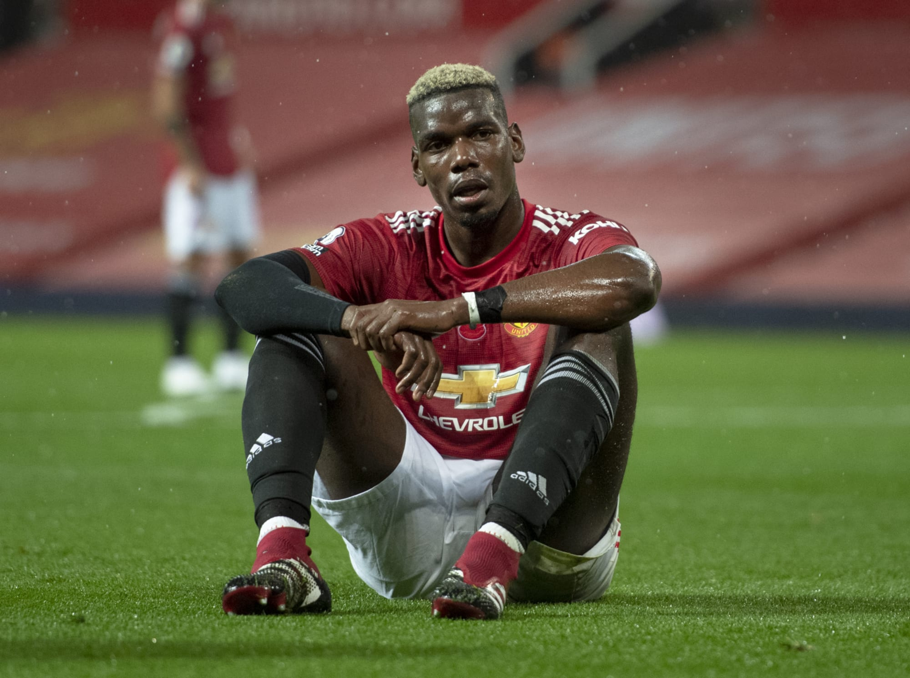
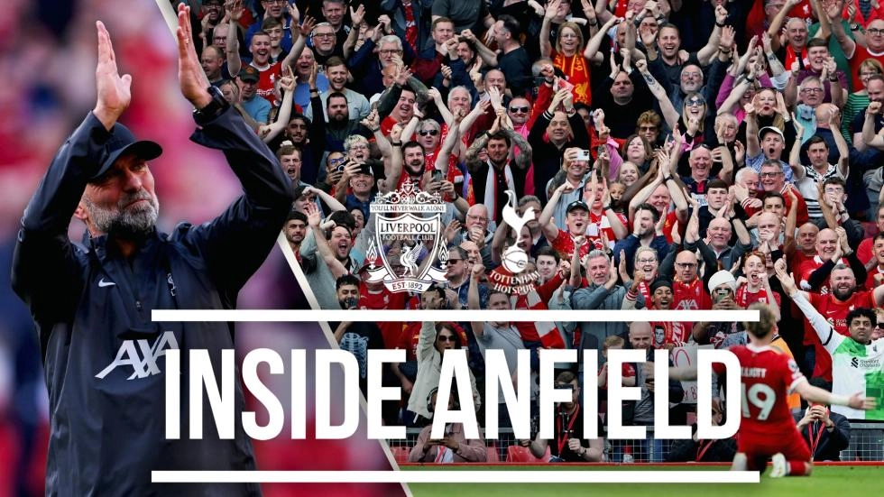

Fans call for Casemiro to be 'SOLD' after Olise ended the Brazilians career
Manchester United fans have called on Casemiro to be sold for his role in Crystal palace opening goal.
Michael Olise opened the scoring against Erik ten Hag's men after a superb solo run before finishing past Andre Onana
the Crystal palace winger had picked up the ball midway through United's half and skipped past Casemiro, who fell to the ground after lunging in.
United fans have been left fuming on social media, with some calling on Casemiro to be siold after his disappointing season continued.
Dawin Nunez deleted images won't change Liverpool problem that isn't his fault
having involed in all four of Liverpools goals against Tottenham, to varying degrees, the fustration was obvious for Mohammed Salah when he was denied a fifth in stoppage time
with the reds having to withstand a late onslaught from Tottenhamat 4-2, Salah's through ball to Darwin Nunez saw the substitute
eventually thwarted by Guglielmo Vicario, who launched himself at the strikers effort on the edge of his box to stop the striker from claiming a first goal in eight matches.
Paul Pogba starts a brand new surprise career in France

Former Manchester United midfielder Paul Pogba will reportedly star in a french film which will be released in April 2025.
The French World Cup winner is currently serving a four-year ban from fottball which was handed to him in february,after he failed a drug test
after Juventus' first game of the season against Udinese.
Pogba insisted he 'never knowingly or deliberately' violated anti-doping rules after testing positive for testosterone, and said that he planned to appeal the decision... see more
Revealed: The INCREDIBLE record Jurgen Klopp will leave liverpool
anfield atmosphere

Jurgen Klopp will leave Liverpool at the end of the season and he will do so having never been beaten twice by a side in a single Premier League Season.
the 56-year-old has just three matches left as the Reds manager after nine years at the helm on Merseyside.
he will depart with many records and achievements under his belt and Opta have revealed that staggering stat that shows just how hard his team have been to beat.
Klopp will leave the Premier League without any team doing double over his side in a season following Sundays 4-2 win over tottenham..... see more
LIVE MATCHES
TEAM
DATE/TIME
liverpool FC vs Aston Villa Fc
-
Manchester City vs Fullham utd
-
Real Madrid vs Borussia Dortmund
-
all other matches
outstanding matches
play-offs
enjoy live matches update on our mobile app, and also bet with Bet-king "betting made easy"
Former EPLstars say they're looking for a wife and their own Beyonce
former tottenham star Jamie O 'Hara is looking for a wife, while ex-liverpool and Ajax star Ryan Babel revealsbr
his type is a woman that looks like Beyonce, as two of the stars of Peacock's new reality dating show 'love undercover'.
'love undercover' takes five footballers who have played for some of the biggest clubs in the world and bring them all to Los Angels to meet single
women with one catch: they're not allowed to say they're professional athletes until the end of the show
Getafe President reveals only side that asked him about Man utd loanee Greenwood
Getafe president Angel Torres has revealed that only one clu has asked him about Manchester United loanee Mason Greenwood -Barcelona.
Manchester United plan to cash in on the 22-year-old, and Getafe have made it clear that they would like to hold onto him, but are unlikely to be able to meet their demands
their hopes of doing so likely come down to a fresh loan deal, but they do have 20% sell-on clause on Greenwood... refer to this page